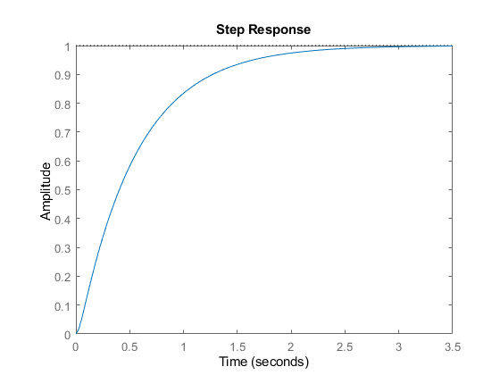
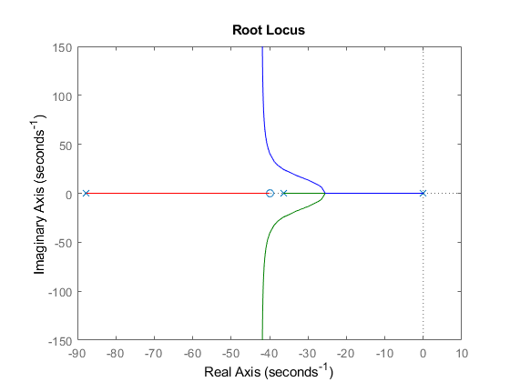
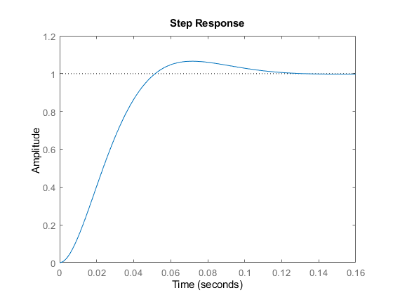
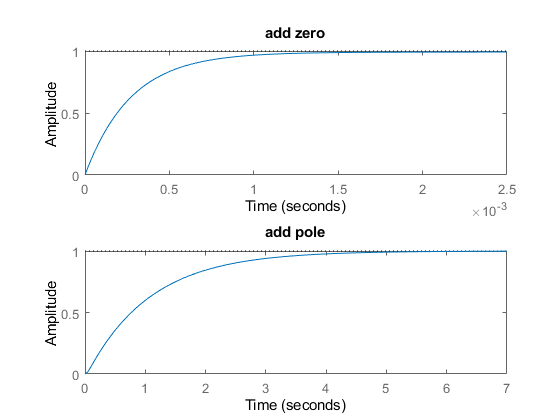
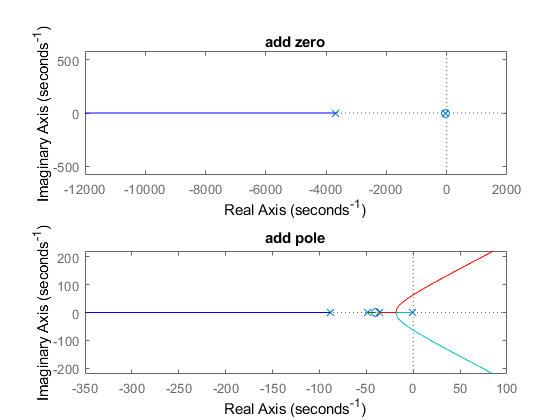

Contents
clc;
clear;
close all;
system without control
G = tf(64.11 , [1 36.42 0]);
sys_1 = feedback(G,1);
figure(1)
rlocus(G);
figure(2)
step(sys_1);
stepinfo(sys_1)
ans =
struct with fields:
RiseTime: 1.1866
SettlingTime: 2.1390
SettlingMin: 0.9036
SettlingMax: 0.9993
Overshoot: 0
Undershoot: 0
Peak: 0.9993
PeakTime: 3.9478


system with control
K = 57;
Gc = K * tf([1 40] , [1 87.6383]);
sys_2 = feedback(G*Gc,1);
figure(3)
rlocus(G*Gc);
figure(4)
step(sys_2);
stepinfo(sys_2)
ans =
struct with fields:
RiseTime: 0.0341
SettlingTime: 0.1060
SettlingMin: 0.9019
SettlingMax: 1.0656
Overshoot: 6.5599
Undershoot: 0
Peak: 1.0656
PeakTime: 0.0713
 
Q5
zero = tf([1 50] , [1]);
sys_3 = feedback(G*Gc*zero,1);
pole = tf([1] , [1 50]);
sys_4 = feedback(G*Gc*pole,1);
figure(5)
subplot(2, 1, 1);
step(sys_3);
title('add zero');
subplot(2, 1, 2);
step(sys_4);
title('add pole');
figure(6)
subplot(2, 1, 1);
rlocus(sys_3);
title('add zero');
subplot(2, 1, 2);
rlocus(sys_4);
title('add pole');
 